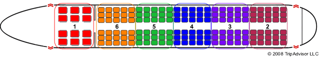
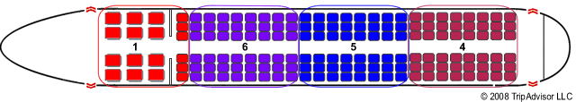
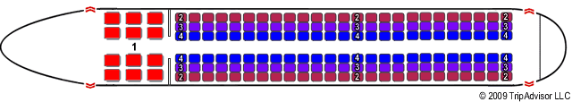
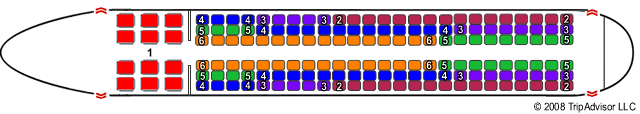
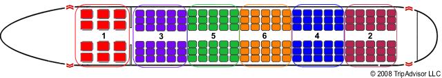

There are seven default seating methods provided with the application. These methods are standard boarding patterns used across the globe by airline companies to board their passengers. All of these methods board the priority passengers first in a randomised order.

Back to front splits the plane into blocks from front to back. These blocks are then ordered from back to front. The passengers board the blocks in a randomised order.

Block boarding is similar to back to front boarding. The difference between the boarding methods is that block boarding boards the passengers in each block in an outside in order.
By seat orders the passengers by their seats. They board the plane in the order they should sit down in their seats.

Outside in boards the passengers from the window rows inwards.
Random lets the passengers board the plane in any order they would wish to.

Reverse pyramid is a hybrid over back to front and outside in boarding patterns.

Rotating zone orders the passengers in the same way as back to front but rotates the blocks from back to front to back etc.